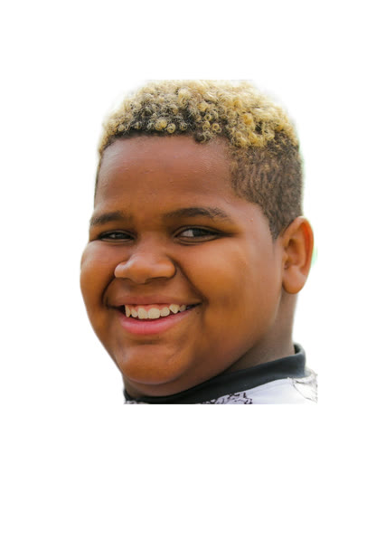
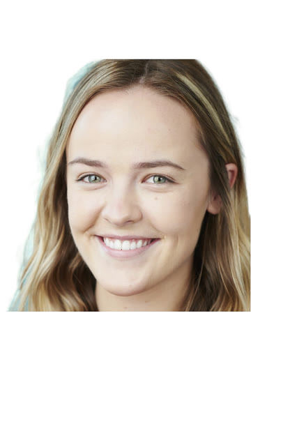
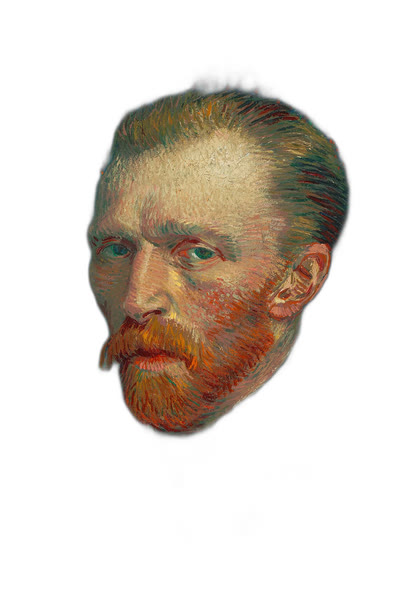
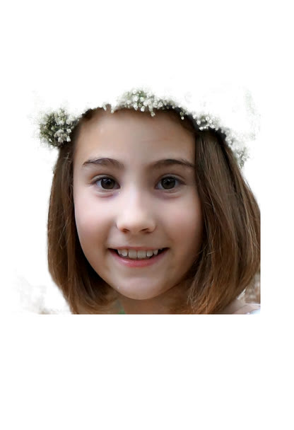
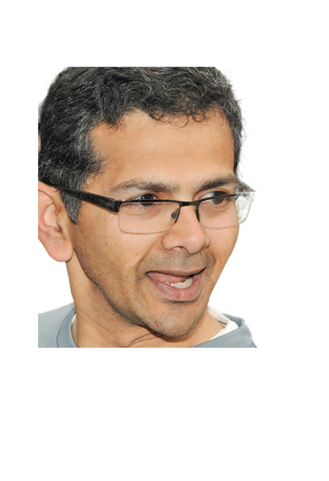
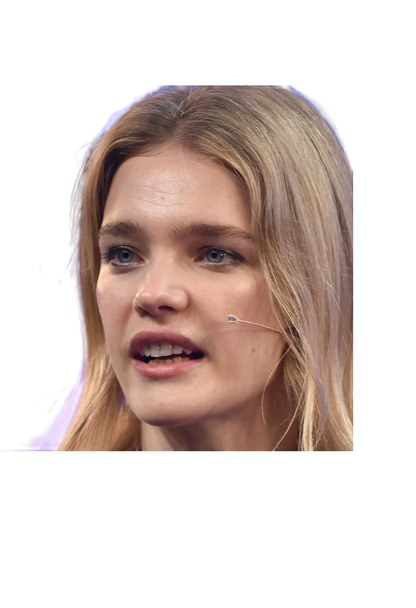

FFHQ-style face crops (plus one painting) padded onto the same 832×1216 canvas, so the shoulders are not visible. Rows as on the homepage. The two long-sequence examples at the bottom use the full recordings.

Subject 09 · input
Subject 10 · input
Subject 11 · input
Subject 14 · input
Subject 16 · inputOurs on the two longest recordings, generated in one pass at the recording's full length. Use the player controls. In the camera demo the coverage sweep runs over the first 20 s, then the final frame is frozen for a 360° orbit and a pitch nod.
“It is a very fine old place, of red brick softened by a pale powdery lichen, which has dispersed itself with happy irregularity, so as to bring the red brick into terms of friendly companionship with the limestone ornaments surrounding the three gables, the windows, and the door place.”
“You can stay seated for just a little longer. Take a good look at the scenery of this town.”

Input portrait